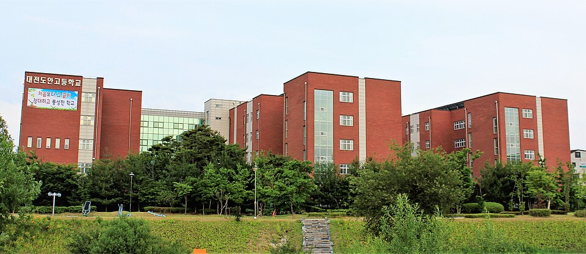
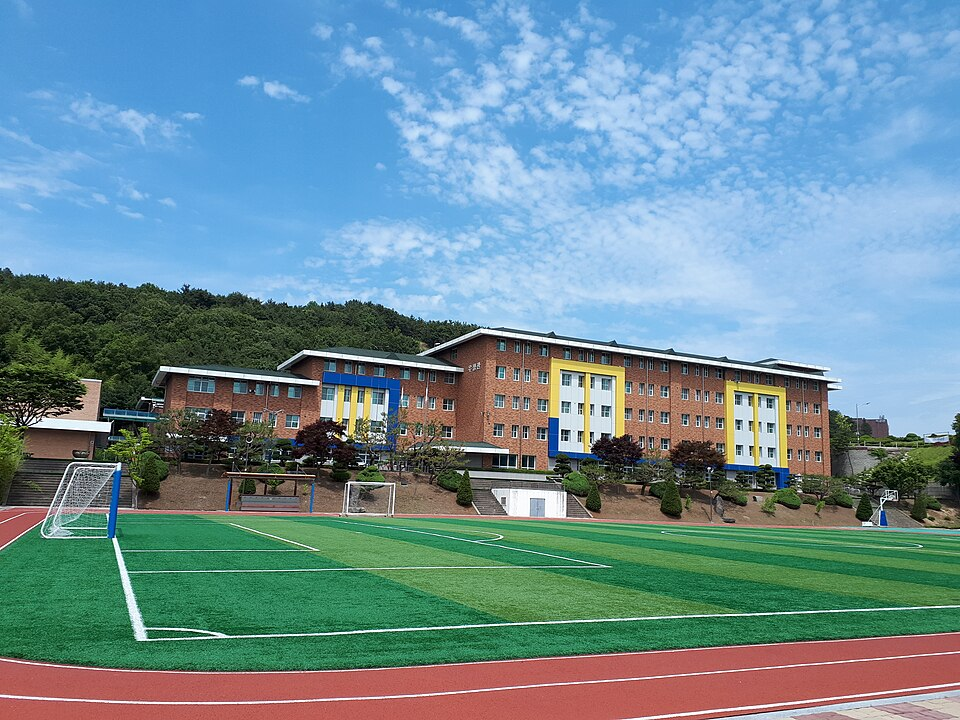

대전 유성구는 관리 중인 학교가 82곳으로 대전에서도 학교가 많은 자치구입니다. 고등학교가 17곳, 중학교가 23곳이고, 대전지족고·대전노은고·대전반석고부터 대전도안고·유성고까지 구 안에 흩어져 있습니다. 학교마다 진도와 프린트가 달라서, 학원 반 진도와 맞지 않는 학생은 집으로 오는 1:1 수학과외나 영어 수업을 따로 찾게 됩니다.
오늘은 유성구로 직접 찾아가는 선생님 중 두 분을 소개합니다. 한 분은 국어와 영어를 함께 보는 선생님, 한 분은 수학을 전담하면서 코딩도 가르치는 선생님입니다. 주로 다니는 동네가 달라서 사는 곳에 따라 선택이 갈립니다.
지족동 쪽에서 초등·중등 영어과외와 국어를 한 분에게 맡기고 싶을 때 맞는 선생님입니다. 영어는 초등 파닉스와 어휘에서 시작해 독해·문법·영작까지 이어서 보고, 중·고등은 내신 대비와 고등 모의고사 풀이를 지도합니다. 초·중·고 문법 강의를 오래 해 온 만큼 문법 개념을 이해시킨 뒤 영작과 반복으로 굳히는 방식입니다.
국어는 어휘 이해를 바탕으로 한 문해력, 여러 지문을 분석해 읽는 힘과 글쓰기를 다룹니다. 상담심리 공부를 한 선생님이라 공부가 막힌 아이의 마음을 먼저 읽고 학습 습관과 진로 이야기까지 함께 나누는 편입니다. 방문 수업만 가능하다는 점은 확인해 주세요.
임ㅇ현 선생님 상세 프로필 →원내동이나 서구 가수원동·관저동 쪽에서 중등·고등 수학과외를 찾을 때 맞는 선생님입니다. 입시 학원에서 중·고등부 수학을 가르쳤던 선생님이라 내신과 모의고사 대비를 함께 봅니다. 중학생은 수행평가 관리와 중간·기말고사 기출문제까지 챙기고, 수학에 흥미를 잃은 학생은 차근차근 속도를 맞춰 올라갑니다.
전자공학을 전공해 자바스크립트·파이썬 코딩 수업도 맡을 수 있습니다. 로블록스 루아(Lua)도 가능해서 코딩에 관심 있는 초등·중등 학생에게 선택지가 넓습니다. 방문과 화상이 모두 가능해 학생 일정에 맞춰 고를 수 있습니다.
윤ㅇ이 선생님 상세 프로필 →
학교마다 출제 방식과 수행평가 비중이 달라서, 학교별로 준비법을 따로 정리해 두었습니다.
👉 대전 유성구 영어과외 선생님 · 대전 유성구 수학과외 선생님 · 관리 학교 82곳 전체 보기